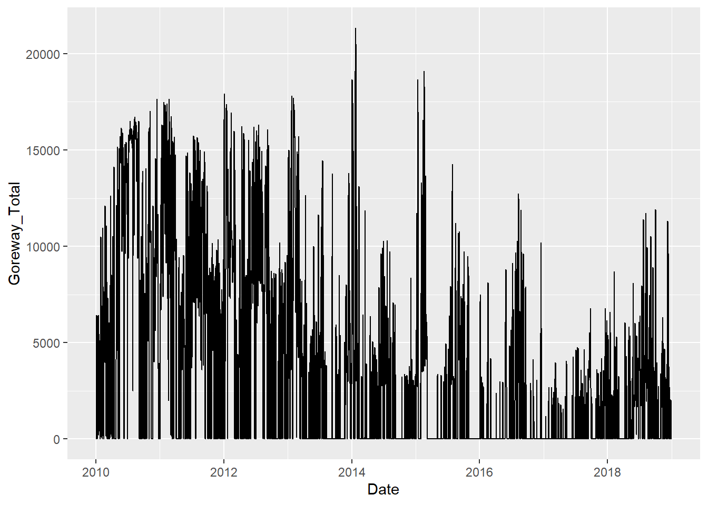
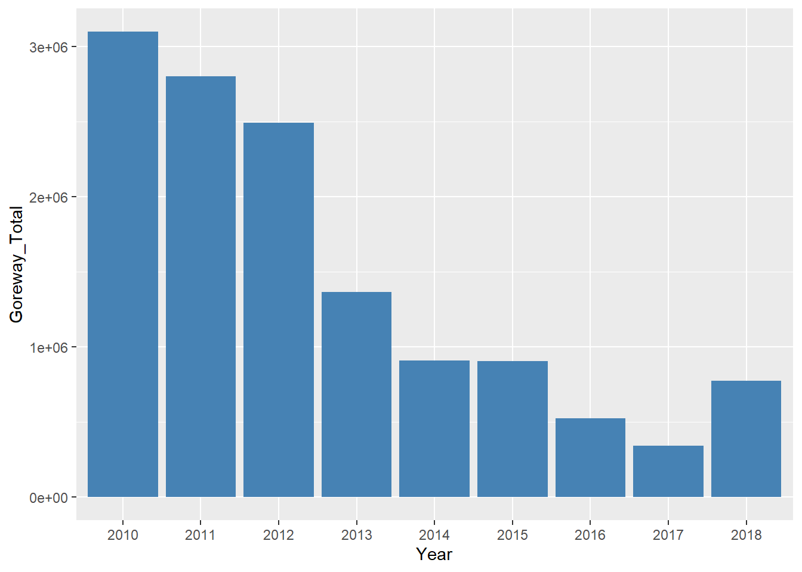
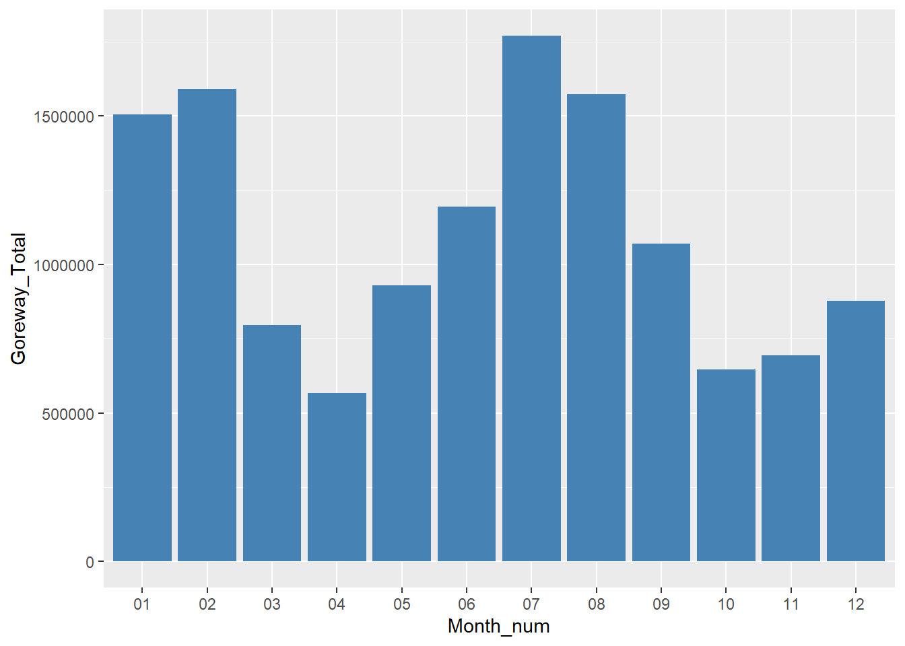

Generation Of Goreway Power Station from the year 2010 - 2018
Generation data downloaded from IESO site ( http://www.ieso.ca/en/Power-Data/Data-Directory)
library(rlang)
library(tidyverse)
library(lubridate)
library(zoo)
library(readxl)G10<-read_excel("GOC-2010.xlsx")## New names:
## * `` -> ...3head(G10,n=5) # Head gives the first five rows of the data . Its gives generating units available .## # A tibble: 5 x 114
## DATE HOUR ...3 ABKENORA AGUASABON ALEXANDER AMARANTH
## <dttm> <dbl> <lgl> <dbl> <dbl> <dbl> <dbl>
## 1 2010-01-01 00:00:00 1 NA 14 2 54 18
## 2 2010-01-01 00:00:00 2 NA 14 19 54 15
## 3 2010-01-01 00:00:00 3 NA 14 26 54 19
## 4 2010-01-01 00:00:00 4 NA 14 26 54 25
## 5 2010-01-01 00:00:00 5 NA 13 26 53 33
## # ... with 107 more variables: ANDREWS <lgl>, APIROQUOIS <dbl>,
## # ARNPRIOR <dbl>, ATIKOKAN <dbl>, AUBREYFALLS <dbl>, BARRETT <dbl>,
## # BECK1 <dbl>, BECK2 <dbl>, `BECK2 PGS` <dbl>, `BRIGHTON BEACH` <dbl>,
## # BRUCEA <dbl>, BRUCEB <dbl>, CALSTOCKGS <lgl>, CAMERONFALLS <dbl>,
## # CANYON <dbl>, CARDINAL <dbl>, CARIBOUFALLS <dbl>, CARMICHAEL <dbl>,
## # CHATSFALLS <dbl>, CHENAUX <dbl>, CLERGUE <dbl>, `DA WATSON` <dbl>,
## # DARLINGTON <dbl>, DECEWFALLS <dbl>, DECEWND1 <dbl>, DESJOACHIMS <dbl>,
## # DESTEC <dbl>, DILLON <lgl>, DOWCHEMICAL <dbl>, DPNTMTLND <dbl>,
## # `DUNFORD GS` <lgl>, EARFALLS <lgl>, `EAST WINDSOR` <dbl>,
## # FORTFRANCSWC <dbl>, GARTSHORE <dbl>, GOSFIELDWGS <lgl>, `GREENFIELD
## # ENERGY CENTRE` <dbl>, GTAA <dbl>, HALTONHILLS <dbl>, HARMON <dbl>,
## # HARRIS <lgl>, HOLDEN <dbl>, HOLINGSWTH <dbl>, KAKABEKA <dbl>,
## # KAPGS <lgl>, KINGSBRIDGE <dbl>, KIPLING <dbl>, LAKESUPERIOR <dbl>,
## # LAKEVIEW <lgl>, LAMBTON <dbl>, LENNOX <dbl>, LITTLELONG <dbl>,
## # LONGSAULTE <dbl>, LOWERNOTCH <dbl>, MACKAYGS <dbl>, MALETKRAFT <dbl>,
## # MANITOUFALLS <dbl>, MISSION <lgl>, MTNCHUTE <dbl>, NAGAGAMI <lgl>,
## # NANTICOKE <dbl>, NIPIGONGS <lgl>, NORTHBAYGS <lgl>, NPCOCHRANE <dbl>,
## # NPIROQFALLS <dbl>, NPKIRKLAND <dbl>, OTTERRAPIDS <dbl>,
## # PICKERINGA <dbl>, PICKERINGB <dbl>, PINEPORTAGE <dbl>, `PORT
## # ALMA` <dbl>, `PORT BURWELL` <dbl>, PORTALMA <lgl>, PORTLANDS <dbl>,
## # PRINCEFARM <dbl>, RAYNER <dbl>, REDROCK <dbl>, `RIPLEY SOUTH` <dbl>,
## # SAUNDERS <dbl>, SCOTTGLP <lgl>, SILVERFALLS <dbl>, `SITHE
## # GOREWAY` <dbl>, SMOKY <dbl>, SPENCE <lgl>, STCLAIRCGS <dbl>,
## # STEEPHILL <lgl>, STEWARTVLE <dbl>, TADOUGLAS <dbl>, TAOHSC <dbl>,
## # TASARNIA <dbl>, TAWINDSOR <dbl>, TCKAP <dbl>, TCNIPIGON <dbl>,
## # TCNORTHBAY <dbl>, TCPLCALSTOCK <dbl>, TCPLTUNIS <dbl>,
## # THOROLDCGS <dbl>, THUNDERBAY <dbl>, TUNISGS <lgl>, UMBATAFALLS <dbl>,
## # ...#tail(G10,5) # Tail gives last five rows can be useful when data from external source#str(G10) # Str() tells how many rows (observations in statistical R ) and columns ( variables R ) it contains, along with type of data gives #summary(G10$`SITHE GOREWAY`) # summary function gets the statistical summary of the dataset by just running on either a column or the complete datasetclass(G10) # gives class/ data type of argument## [1] "tbl_df" "tbl" "data.frame"dim(G10) # Dimensions of the data set ## [1] 8761 114#is.na(G10)table(is.na(G10)) # Gives total number of missing values ##
## FALSE TRUE
## 850826 147928#colSums(is.na(G10)) # checking variables in which missing values are presentsum(is.na(G10$`SITHE GOREWAY`)) # shows number of missing values in `SITHE GOREWAY` ## [1] 1mean(G10$`SITHE GOREWAY`) # Missing values hinders in calculation in a dataset. As only one missing values we try to calculate mean generation ## [1] NAmean(G10$`SITHE GOREWAY`,na.rm=TRUE) # TRUE ignores the missing values whereas .omit removes the missing values ## [1] 353.6766summary(G10$`SITHE GOREWAY`,na.rm=TRUE)## Min. 1st Qu. Median Mean 3rd Qu. Max. NA's
## 0.0 0.0 324.0 353.7 562.0 930.0 1Analysis of the data columns
1. Date needs to be changed to Date format .
G10$DATE <- as.Date(G10$DATE, format = "%Y-%m-%d") # Changing to Date format2. As the given data is in hourly we are grouping hourly into daily .
Total daily generation gives a broad picture of the data . Here we considering Sithe Goreway ( Goreway Power Station ) for study purpose.
Dz_10<-G10 %>% group_by(DATE) %>% summarize(Goreway_Total=sum(`SITHE GOREWAY`),n=n())
head(Dz_10) ## # A tibble: 6 x 3
## DATE Goreway_Total n
## <date> <dbl> <int>
## 1 2010-01-01 0 24
## 2 2010-01-02 0 24
## 3 2010-01-03 11 24
## 4 2010-01-04 6423 24
## 5 2010-01-05 3168 24
## 6 2010-01-06 5513 24#library(ggplot2)
#plot<-ggplot(Dz_10, aes(x=~Date,y=~Goreway_Total)) + geom_line()
#plot#library(plotly)
#plot_ly(Dz_10, x=~Date) %>% add_trace(y=~Goreway_Total,mode='lines+markers')
#plot_ly(Dz_10, x=~DATE) %>% add_trace(y=~Goreway_Total,mode='lines') %>% layout(title='Goreway Generation 2010')Similarly grouping hourly MW to daily was performed from the year 2011 to 2018
Year 2011
G11<-read_excel("GOC-2011.xlsx")## New names:
## * `` -> ...3G11$DATE <- as.Date(G11$DATE, format = "%Y-%m-%d") # Changing to Date format
Dz_11<-G11 %>% group_by(DATE) %>% summarize(Goreway_Total=sum(`SITHE GOREWAY`),n=n())
head(Dz_11)## # A tibble: 6 x 3
## DATE Goreway_Total n
## <date> <dbl> <int>
## 1 2011-01-01 0 24
## 2 2011-01-02 0 24
## 3 2011-01-03 5807 24
## 4 2011-01-04 8077 24
## 5 2011-01-05 10289 24
## 6 2011-01-06 12158 24##plot_ly(Dz_11, x=~Date) %>% add_trace(y=~Goreway_Total,mode=‘lines+markers’)
#plot_ly(Dz_11, x=~DATE) %>% add_trace(y=~Goreway_Total, mode='lines') %>% layout(title='Goreway Generation 2011')Year 2012
G12<-read_excel("GOC-2012.xlsx")
G12$DATE <- as.Date(G12$DATE, format = "%Y-%m-%d") # Changing to Date format
Dz_12<-G12 %>% group_by(DATE) %>% summarize(Goreway_Total=sum(`SITHE GOREWAY`),n=n())
head(Dz_12)## # A tibble: 6 x 3
## DATE Goreway_Total n
## <date> <dbl> <int>
## 1 2012-01-01 0 24
## 2 2012-01-02 5645 24
## 3 2012-01-03 16596 24
## 4 2012-01-04 17918 24
## 5 2012-01-05 8894 24
## 6 2012-01-06 3618 24#plot_ly(Dz_12, x=~DATE) %>% add_trace(y=~Goreway_Total,mode='lines') %>% layout(title='Goreway Generation 2012')Year 2013
G13<-read_excel("GOC-2013.xlsx")## Warning in read_fun(path = enc2native(normalizePath(path)), sheet_i =
## sheet, : Expecting logical in DL8767 / R8767C116: got 'pppp'## New names:
## * `` -> ...113
## * `` -> ...114
## * `` -> ...115
## * `` -> ...116G13$Date <- as.Date(G13$Date, format = "%Y-%m-%d") # Changing to Date format
Dz_13<-G13 %>% group_by(Date) %>% summarize(Goreway_Total=sum(`SITHE GOREWAY`),n=n())
head(Dz_13)## # A tibble: 6 x 3
## Date Goreway_Total n
## <date> <dbl> <int>
## 1 2013-01-01 0 24
## 2 2013-01-02 11716 24
## 3 2013-01-03 14626 24
## 4 2013-01-04 10032 24
## 5 2013-01-05 4083 24
## 6 2013-01-06 4760 24#plot_ly(Dz_13, x=~Date) %>% add_trace(y=~Goreway_Total,mode='lines') %>% layout(title='Goreway Generation 2013')Year 2014
G14<-read_excel("GOC-2014.xlsx")
G14$Date <- as.Date(G14$Date, format = "%Y-%m-%d") # Changing to Date format
Dz_14<-G14 %>% group_by(Date) %>% summarize(Goreway_Total=sum(`SITHE GOREWAY`),n=n())
head(Dz_14)## # A tibble: 6 x 3
## Date Goreway_Total n
## <date> <dbl> <int>
## 1 2014-01-01 3114 24
## 2 2014-01-02 15335 24
## 3 2014-01-03 18671 24
## 4 2014-01-04 11042 24
## 5 2014-01-05 5903 24
## 6 2014-01-06 5443 24#plot_ly(Dz_14, x=~Date) %>% add_trace(y=~Goreway_Total,mode='lines') %>% layout(title='Goreway Generation 2014')Year 2015
G15<-read_excel("GOC-2015.xlsx")
G15$Date <- as.Date(G15$Date, format = "%Y-%m-%d") # Changing to Date format
Dz_15<-G15 %>% group_by(Date) %>% summarize(Goreway_Total=sum(`SITHE GOREWAY-G11`+`SITHE GOREWAY-G12`+`SITHE GOREWAY-G13`+`SITHE GOREWAY-G15`),n=n())
head(Dz_15)## # A tibble: 6 x 3
## Date Goreway_Total n
## <date> <dbl> <int>
## 1 2015-01-01 0 24
## 2 2015-01-02 3358 24
## 3 2015-01-03 3290 24
## 4 2015-01-04 0 24
## 5 2015-01-05 5658 24
## 6 2015-01-06 11606 24#plot_ly(Dz_15, x=~Date) %>% add_trace(y=~Goreway_Total,mode='lines') %>% layout(title='Goreway Generation 2015')Year 2016
G16<-read_excel("GOC-2016.xlsx")## New names:
## * WHITEDOG -> WHITEDOG...167
## * `WOLFE ISLAND` -> `WOLFE ISLAND...168`
## * `YORKCGS-G1` -> `YORKCGS-G1...169`
## * `YORKCGS-G2` -> `YORKCGS-G2...170`
## * ZURICH -> ZURICH...171
## * ... and 5 more problemsG16$Date <- as.Date(G16$Date, format = "%Y-%m-%d") # Changing to Date format
Dz_16<-G16 %>% group_by(Date) %>% summarize(Goreway_Total=sum(`SITHE GOREWAY-G11`+`SITHE GOREWAY-G12`+`SITHE GOREWAY-G13`+`SITHE GOREWAY-G15`),n=n())
head(Dz_16)## # A tibble: 6 x 3
## Date Goreway_Total n
## <date> <dbl> <int>
## 1 2016-01-01 0 24
## 2 2016-01-02 0 24
## 3 2016-01-03 2376 24
## 4 2016-01-04 7144 24
## 5 2016-01-05 7488 24
## 6 2016-01-06 0 24#plot_ly(Dz_16, x=~Date) %>% add_trace(y=~Goreway_Total,mode='lines') %>% layout(title='Goreway Generation 2016')Year 2017
G17<-read_excel("GOC-2017.xlsx")
G17$Date <- as.Date(G17$Date, format = "%Y-%m-%d") # Changing to Date format
Dz_17<-G17 %>% group_by(Date) %>% summarize(Goreway_Total=sum(`SITHE GOREWAY-G11`+`SITHE GOREWAY-G12`+`SITHE GOREWAY-G13`+`SITHE GOREWAY-G15`),n=n())
head(Dz_17)## # A tibble: 6 x 3
## Date Goreway_Total n
## <date> <dbl> <int>
## 1 2017-01-01 0 24
## 2 2017-01-02 0 24
## 3 2017-01-03 0 24
## 4 2017-01-04 0 24
## 5 2017-01-05 0 24
## 6 2017-01-06 0 24#plot_ly(Dz_17, x=~Date) %>% add_trace(y=~Goreway_Total,mode='lines') %>% layout(title='Goreway Generation 2017')Year 2018
G18<-read_excel("GOC-2018.xlsx")
Dz_18<-G18 %>% group_by(Date) %>% summarize(Goreway_Total=sum(`SITHE GOREWAY-G11`+`SITHE GOREWAY-G12`+`SITHE GOREWAY-G13`+`SITHE GOREWAY-G15`),n=n())
head(Dz_18)## # A tibble: 6 x 3
## Date Goreway_Total n
## <dttm> <dbl> <int>
## 1 2018-01-01 00:00:00 0 24
## 2 2018-01-02 00:00:00 0 24
## 3 2018-01-03 00:00:00 5390 24
## 4 2018-01-04 00:00:00 5185 24
## 5 2018-01-05 00:00:00 1401 24
## 6 2018-01-06 00:00:00 5002 24#plot_ly(Dz_18, x=~Date) %>% add_trace(y=~Goreway_Total,mode='lines') %>% layout(title='Goreway Generation 2018')Combining the data from 2013 to 2018 and making a single data file
Dz_a13<-rbind(Dz_13,Dz_14,Dz_15,Dz_16,Dz_17,Dz_18)
str(Dz_a13)## Classes 'tbl_df', 'tbl' and 'data.frame': 2192 obs. of 3 variables:
## $ Date : Date, format: "2013-01-01" "2013-01-02" ...
## $ Goreway_Total: num 0 11716 14626 10032 4083 ...
## $ n : int 24 24 24 24 24 24 24 24 24 24 ...Date variable name from 2010 to 2012 are all caps .
Changing as per “Date” which is from 2013 to 2018.
2010
G10<-read_excel("GOC-2010.xlsx")## New names:
## * `` -> ...3G10$DATE <- as.Date(G10$DATE, format = "%Y-%m-%d") # Changing to Date format
Dz_10<-G10 %>% group_by(DATE) %>% summarize(Goreway_Total=sum(`SITHE GOREWAY`),n=n())
colnames(Dz_10)[colnames(Dz_10)=="DATE"] <- "Date"
head(Dz_10)## # A tibble: 6 x 3
## Date Goreway_Total n
## <date> <dbl> <int>
## 1 2010-01-01 0 24
## 2 2010-01-02 0 24
## 3 2010-01-03 11 24
## 4 2010-01-04 6423 24
## 5 2010-01-05 3168 24
## 6 2010-01-06 5513 242011
G11<-read_excel("GOC-2011.xlsx")## New names:
## * `` -> ...3G11$DATE <- as.Date(G11$DATE, format = "%Y-%m-%d") # Changing to Date format
Dz_11<-G11 %>% group_by(DATE) %>% summarize(Goreway_Total=sum(`SITHE GOREWAY`),n=n())
colnames(Dz_11)[colnames(Dz_11)=="DATE"] <- "Date"
head(Dz_11)## # A tibble: 6 x 3
## Date Goreway_Total n
## <date> <dbl> <int>
## 1 2011-01-01 0 24
## 2 2011-01-02 0 24
## 3 2011-01-03 5807 24
## 4 2011-01-04 8077 24
## 5 2011-01-05 10289 24
## 6 2011-01-06 12158 242012
G12<-read_excel("GOC-2012.xlsx")
G12$DATE <- as.Date(G12$DATE, format = "%Y-%m-%d") # Changing to Date format
Dz_12<-G12 %>% group_by(DATE) %>% summarize(Goreway_Total=sum(`SITHE GOREWAY`),n=n())
colnames(Dz_12)[colnames(Dz_12)=="DATE"] <- "Date"
head(Dz_12)## # A tibble: 6 x 3
## Date Goreway_Total n
## <date> <dbl> <int>
## 1 2012-01-01 0 24
## 2 2012-01-02 5645 24
## 3 2012-01-03 16596 24
## 4 2012-01-04 17918 24
## 5 2012-01-05 8894 24
## 6 2012-01-06 3618 24Combining the data from 2010 to 2012 and making a single data file
Dz_a10<-rbind(Dz_10,Dz_11,Dz_12)
head(Dz_a10)## # A tibble: 6 x 3
## Date Goreway_Total n
## <date> <dbl> <int>
## 1 2010-01-01 0 24
## 2 2010-01-02 0 24
## 3 2010-01-03 11 24
## 4 2010-01-04 6423 24
## 5 2010-01-05 3168 24
## 6 2010-01-06 5513 24Combining the data from 2010 to 2018 and making a single data file
Dz_y18<-rbind(Dz_a10,Dz_a13)
head(Dz_y18)## # A tibble: 6 x 3
## Date Goreway_Total n
## <date> <dbl> <int>
## 1 2010-01-01 0 24
## 2 2010-01-02 0 24
## 3 2010-01-03 11 24
## 4 2010-01-04 6423 24
## 5 2010-01-05 3168 24
## 6 2010-01-06 5513 24dim(Dz_y18) # Dimensions of the data set## [1] 3289 3#table(is.na(Dz_y18)) # Gives total number of missing values #colSums(is.na(Dz_y18)) # checking variables in which missing values are present#write.table(Dz_y18,file="Output/Goreway_1.csv",sep=",",col.names=TRUE,row.names=F,append=FALSE)Gy_18<-na.omit(Dz_y18)
head(Gy_18,n=2)## # A tibble: 2 x 3
## Date Goreway_Total n
## <date> <dbl> <int>
## 1 2010-01-01 0 24
## 2 2010-01-02 0 24colSums(is.na(Gy_18)) # checking variables in which missing values are present## Date Goreway_Total n
## 0 0 0Plotting the generation from 2010 till 2018
library(ggplot2)
plot<-ggplot(Gy_18, aes(x=Date,y=Goreway_Total)) + geom_line()
plot
is.data.frame(Gy_18)## [1] TRUE#library(plotly)
#plot_ly(Gy_18, x=~Date,y=~Goreway_Total)
#plot_ly(Gy_18, x=~Date) %>% add_trace(y=~Goreway_Total,mode='lines')Dz_y18$Year <- format(Dz_y18$Date, format = "%Y")
Dz_y18$Month_num <- format(Dz_y18$Date, format = "%m")
Dz_y18$Day <- format(Dz_y18$Date, format = "%d")
head(Dz_y18)## # A tibble: 6 x 6
## Date Goreway_Total n Year Month_num Day
## <date> <dbl> <int> <chr> <chr> <chr>
## 1 2010-01-01 0 24 2010 01 01
## 2 2010-01-02 0 24 2010 01 02
## 3 2010-01-03 11 24 2010 01 03
## 4 2010-01-04 6423 24 2010 01 04
## 5 2010-01-05 3168 24 2010 01 05
## 6 2010-01-06 5513 24 2010 01 06Plotting the generation from 2010 till 2018
library(ggplot2)
plot<-ggplot(Gy_18, aes(x=Date,y=Goreway_Total)) + geom_line()
plot
is.data.frame(Gy_18)## [1] TRUE#library(plotly)
#plot_ly(Gy_18, x=~Date,y=~Goreway_Total)
#plot_ly(Gy_18, x=~Date) %>% add_trace(y=~Goreway_Total,mode='lines')###Extract Year,Month and Day and store in separate columns
Dz_y18$Year <- format(Dz_y18$Date, format = "%Y")
Dz_y18$Month_num <- format(Dz_y18$Date, format = "%m")
Dz_y18$Day <- format(Dz_y18$Date, format = "%d")
head(Dz_y18)## # A tibble: 6 x 6
## Date Goreway_Total n Year Month_num Day
## <date> <dbl> <int> <chr> <chr> <chr>
## 1 2010-01-01 0 24 2010 01 01
## 2 2010-01-02 0 24 2010 01 02
## 3 2010-01-03 11 24 2010 01 03
## 4 2010-01-04 6423 24 2010 01 04
## 5 2010-01-05 3168 24 2010 01 05
## 6 2010-01-06 5513 24 2010 01 06Gy_18<-na.omit(Dz_y18)
head(Gy_18,n=2)## # A tibble: 2 x 6
## Date Goreway_Total n Year Month_num Day
## <date> <dbl> <int> <chr> <chr> <chr>
## 1 2010-01-01 0 24 2010 01 01
## 2 2010-01-02 0 24 2010 01 02p_year<-ggplot(Gy_18, aes(x=Year,y=Goreway_Total)) + geom_bar(stat="identity", fill="steelblue")
p_year
Gy_18$Month_num<-as.factor(Gy_18$Month_num)
str(Gy_18)## Classes 'tbl_df', 'tbl' and 'data.frame': 3286 obs. of 6 variables:
## $ Date : Date, format: "2010-01-01" "2010-01-02" ...
## $ Goreway_Total: num 0 0 11 6423 3168 ...
## $ n : int 24 24 24 24 24 24 24 24 24 24 ...
## $ Year : chr "2010" "2010" "2010" "2010" ...
## $ Month_num : Factor w/ 12 levels "01","02","03",..: 1 1 1 1 1 1 1 1 1 1 ...
## $ Day : chr "01" "02" "03" "04" ...
## - attr(*, "na.action")= 'omit' Named int 366 1463 2264
## ..- attr(*, "names")= chr "366" "1463" "2264"p_month<-ggplot(Gy_18, aes(x=Month_num,y=Goreway_Total)) + geom_bar(stat="identity", fill="steelblue")
p_month